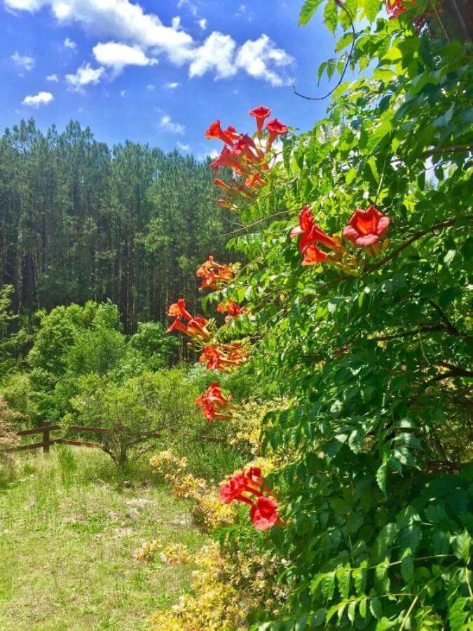
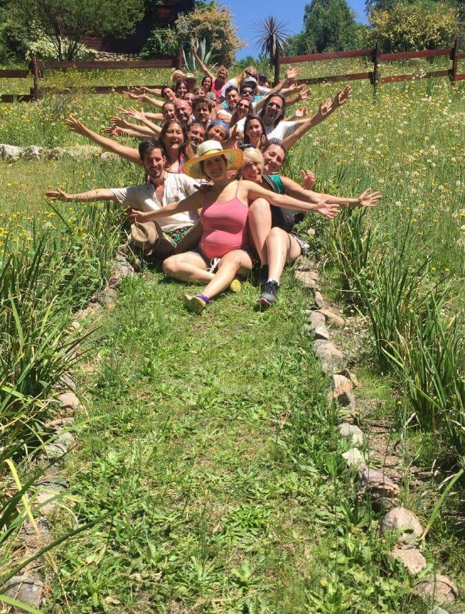
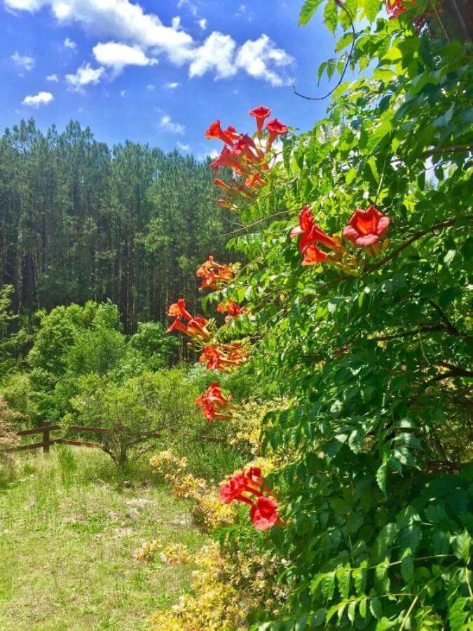
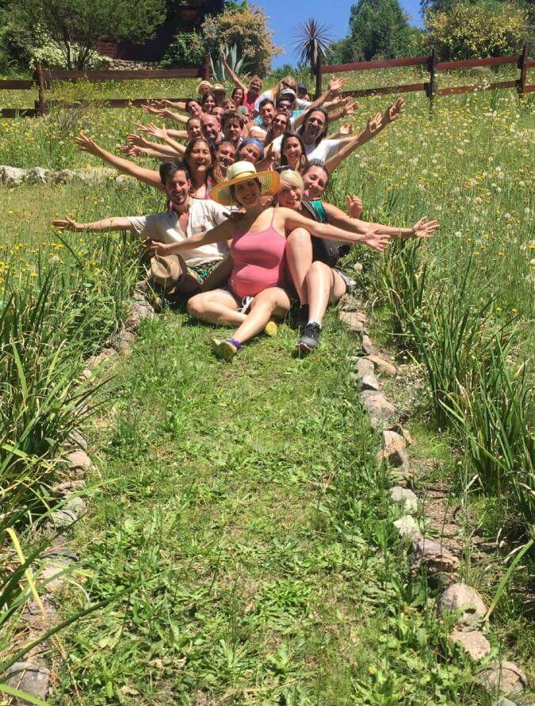

Despertar
Se dicta una formación integral, la cual tiene una duración de tres años con un encuentro por mes intensivo.
Se otorga un certificado, vale aclarar que para este tipo de disciplinas aún el marco legal está en formación por lo cual los certificados no suelen estar avalados por organismos oficiales.
Se incorporan herramientas en los ámbitos de Medicina tradicional china junto con un enfoque sutil en la evolución espiritual, en lo personal y particular logrando así que el cursante adquiera sabiduría y métodos. Dado el vagage necesario para desempeñarse también como terapeuta.
Terminado el cursado año tras año se organizan retiros y se afianzan los conocimientos. Te esperamos e invitamos a recorrer este camino de crecimiento y evolución consciente.
 



En los Seminarios de Medicina Tradicional China Se trata de Trasmitir conocimientos y Experiencias a quienes estén interesados en Ampliar La visión y el Sentir...,en el Área...Ya sea en lo Profesional, cómo en lo Personal.
Ya que no sólo se hace Foco en el Conocimiento Escrito, sino que es de mi preferencia hacer Incapié en el Crecimiento Personal y Autoconocimiento como punto de Partida...
Para Lograr realmente Idoneidad en el Arte y Sabiduría de Sanar a otro Ser...
Entendiendo que no es posible Ser Herramienta para tal Fin... Sin Conocer, Revisar y Transitar los Patrones de Desequilibrio en nosotros Mismos.
Utilizo cómo Herramienta Fundamental la Medicina Tradicional China...
Vista desde un Ángulo más Integral
Interactuando desde la Emoción con el
Paciente a la vez llevándolo al Campo Mental, Físico y Bio Energético.
En el 1 er Módulo se ven los siguientes temas:
-Los Procesos de Pensamiento.
- El x que de la Enfermedad
- Historia Evolutiva del Ser
- Autoconocimiento
- Importancia...
- Meditación, etcétera...